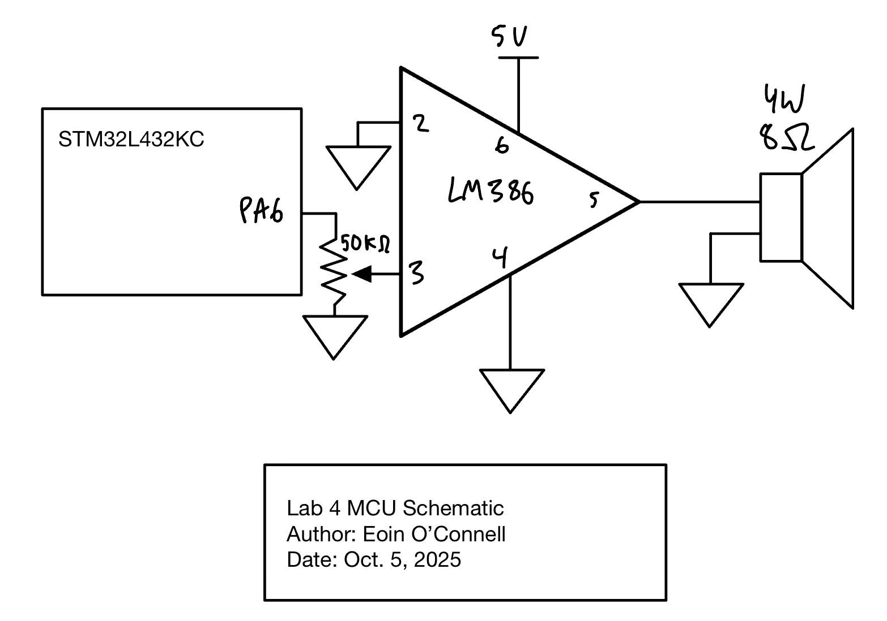
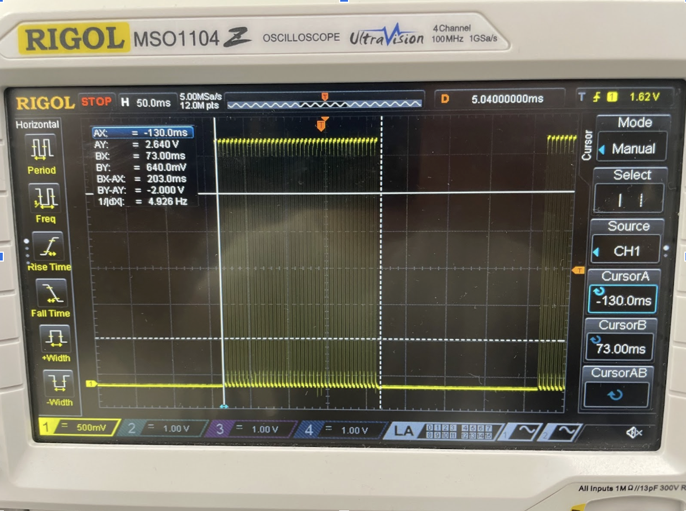
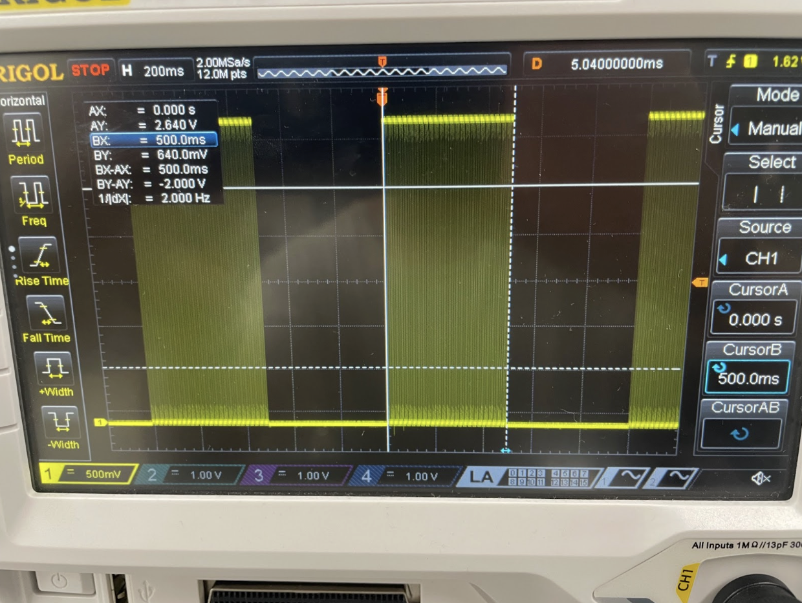
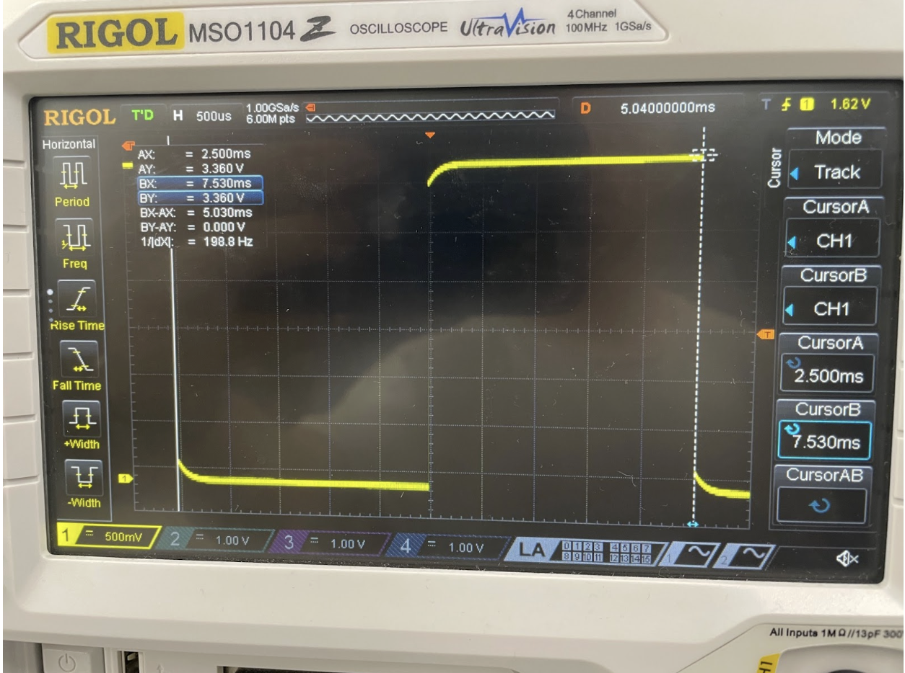
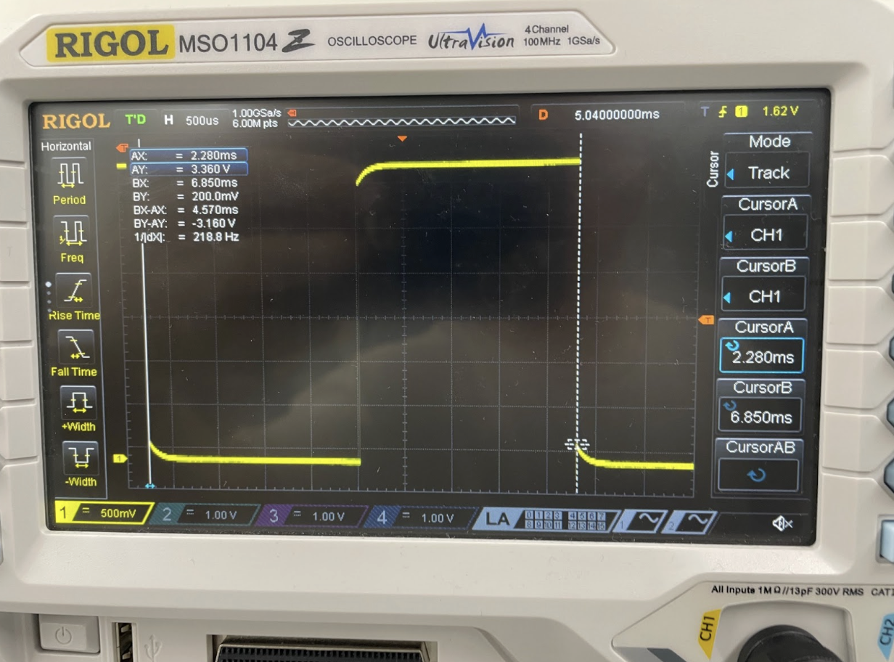
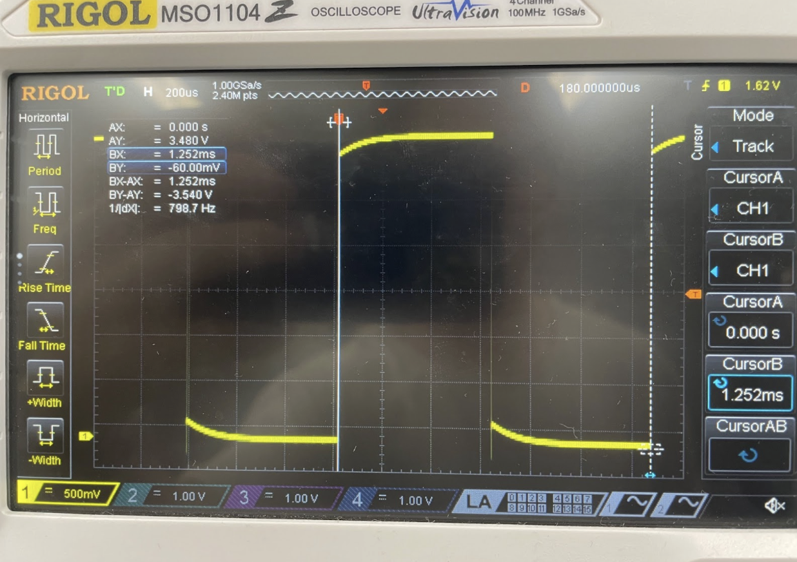
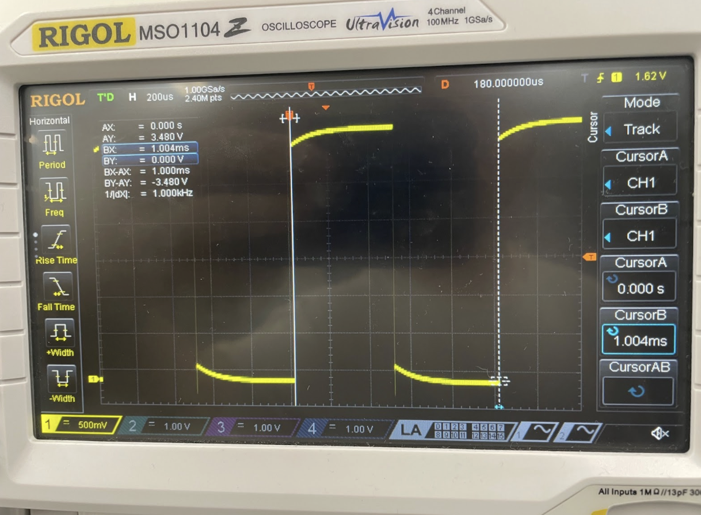

Lab 4: Digital Audio
Introduction
This is the first Lab in E155 working with microcontrollers. The goal of this lab is to get comfortable with our microcontroller, the STM32L432KC, and to learn how to write our own drivers and header files.
Design and Testing Methodology
The primary challenges of this lab are in the setup of the microcontroller, getting the clock to function as expected, and setting specific bits in registers to get everything to work. Therefore, a lot of the troubleshooting is to make sure that everything is setup correctly.
Once I am able to get the GPIO pins to toggle at specified frequencies, the final testing to confirm correct functionality is relatively simple.
Segger Testing
Before ever flashing the MCU or building a circuit, I tested my code in Segger Embedded Studio, loaded with drivers and packages for my STM32L432KC MCU. This allowed me to test that my code was working as intended. I looked into the relevant registers to ensure that bits were getting updated, specfically that the counters were incrementing and resetting and the desired points.
Osilloscope Testing
To confirm that the song is playing at the correct frequency of notes and the duration is correct, I will use an oscilloscope.
Ear test
Of course, for this type of lab the ultimate test is to make sure that the songs, Fur Elise and Happy Birthday, sound to our ears as they expect. Our ears are very good at detecting if the intervals between notes are not correct, or if the rythem is not steady. I don’t have perfect pitch so I cannot confirm that it is in the correct key, but I can tell if everything is correct relative to each other.
Timer Configuration
The first thing that the main function does is configure flash and the system clock to use the PLL at 80 Mhz. I utilized header files and drivers that were provided as part of this lab.
configureFlash();
configureClock();Next, I configured the GPIO to connect my song to an external pin to be able to be played through the speaker.
// configure GPIO
RCC->AHB2ENR |= (1 << 0); // turn GPIOA clock
RCC->APB2ENR |= (1 << 16); // enable TIM15
RCC->APB2ENR |= (1 << 17); // enable TIM16Then I specified for that pin to be pin 6, and set the function to be alternate funcion 14 to connect TIM16 Channel 1.
// use pin 6
pinMode(6, GPIO_ALT); // set pin 6 to alt function
GPIO->AFRL &= ~(0b1111<<4*6); // clear alt func bits
GPIO->AFRL |= (14<<4*6); // set pin 6 to alt func 14Now, I configure the Timers with the headers and drivers that I wrote:
configureTIM15();
configureTIM16();We can see these functions in the file I wrote, STM32L432KC_TIM.c:
// Function configureTIM16:
// Sets up TIM15 for use for measuring duration of a note
// Uses a prescaler of 700
// No arguments
void configureTIM15(void) {
TIM15->CR1 &= ~(1<<0); // disable counter
TIM15->PSC = 700; // PSC = 700
TIM15->EGR |= (1<<0); // trigger an update
TIM15->CR1 |= (1<<0); // enable counter
}
// Function configureTIM16:
// Sets up TIM16 for use for setting the frequency of a note
// Uses a prescaler of 6
// Uses duty cycle of 50%
// No arguments
void configureTIM16(void){
// Set PWM mode
TIM16->CCMR1 &= ~(0b111 << 4); // clear OC1M[2:0]
TIM16->CCMR1 |= (0b110 << 4); // set PWM mode 1
TIM16->CCMR1 |= (1 << 3); // Set preload enable
TIM16->CCMR1 &= ~(0b11 << 0); // Set CC1 channel as output
TIM16->CR1 |= (1 << 7); // enable ARPE
TIM16->CCER |= (1 << 0); // Capture/Compare 1 output enable
TIM16->BDTR |= (1 << 15); // Main output enable
// set Prescaler
TIM16->PSC = 6; // PSC = 6
TIM16->ARR = 0xFFFF; // auto-reload
// Update changes and enable counter
TIM16->CR1 &= ~(1 << 0); // disable counter
TIM16->EGR |= (1 << 0); // trigger an update
TIM16->CR1 |= (1 << 0); // enable counter
}Here we see that the configuration for TIM15 is a lot simpler because it is not connected to a pin and it is not using PWM. For TIM16, we set CCMR1 to PWM mode 1, so that the output flips each cycle when it gets to the value in CCR1 which depends on the duty cycle. Both timers have a prescaler set to match out desired range of frequencies and durations with maximum accuracy.
Now that the timers are configured, it is just a matter of setting the auto-reload register (ARR) to change the duration or frequency of a note, and updating the timer for the next note. I also update CCR1 to ensure that every note has 50% duty cycle for even volumes.
// Function setFreq:
// Sets the frequency (in Hz) on TIM16
// Arguments: int freq specifies the frequency of a note in Hz
void setFreq(int freq){
if (freq == 0){
// If freq == 0 it is supposed to be silent
TIM16->CCR1 = 0; // 0 Percent duty cycle
} else {
// Toggle pin at freq
TIM16->ARR = (80000000/(6+1)/freq) - 1; // 80 MHz / (PSC + 1) / Freq -1 yeields count to produce desired freq
TIM16->CCR1 = ((80000000/(6+1)/freq) - 1)/2; // 50 Percent duty cycle
TIM16->EGR |= (1 << 0); // trigger an update
TIM16->CR1 |= (1 << 0); // enable counter
}
}
// Function setDur:
// Sets the delay (in ms) on TIM15
// Num cycles delay = (ARR+1)*(PSC+1)
// Arguments: int dur specifies the duration of a note in ms
void setDur(int dur){
int cycles_per_ms = 80000000/1000/701; // 80 MHz / (1 s to 1000 ms)/ (Prescaler + 1)
TIM15->ARR = cycles_per_ms*dur; // Sets auto-reload register to desired number of ticks
TIM15->EGR |= (1 << 0); // trigger an update
TIM15->SR &= ~(1 << 0); // clear UIF bit
TIM15->CNT = 0; // reset counter before while loop
while (!(TIM15->SR & (1<<0))); // waits until counter reaches tick count
}Calculations
I need to calculate the frequency of the timers with the specific parameters that I have chosen, particulary the prescaler and the auto-reload register. To do this I will rely on the formula: \[f_{TIM} = \frac{f_{input}}{(PSC + 1) * (ARR + 1)}\]
For TIM15 (duration):
- ARR = duration dependent
- PSC = 700
To find the min and max durations, I can solve the equaion for when ARR is at its min and max value. When ARR = 0, \(f_{TIM} = \frac{f_{input}}{701}\). With an 80 Mhz clock, that means that the timer will toggle at 114123 Hz, or a minimum delay of 8.7625 \(\micro s\).
The max duration is when ARR = h’FFFF = d’65535. \(f_{TIM} = \frac{f_{input}}{(700+1)(65535+1)} = 1.7\) Hz. This gives a max delay of 0.574 s, which is long enough for my longest notes.
For TIM16 (PWM):
- ARR = freq dependent
- PSC = 6
To find the min and max frequencies, I use the same equation. When ARR = 0, \(f_{TIM} = \frac{f_{input}}{6+1}\). For 80 Mhz, this gives us 11.4 MHz. When ARR = h’FFFF = d’65535, \(f_{TIM} = \frac{f_{input}}{(6+1)(65535+1)} = 174.38\) Hz. We are looking for frequencies between around 200-1400 Hz, so this will cover this range.
One part of this lab is ensuring that pitches are correct to 1% accuracy accross 200-1000 Hz.
200 Hz:
\[200 = \frac{80,000,000}{(6+1)(ARR+1)}\] \[ARR = \frac{399993}{7} \approx 57142\]
Plugging back in to see the actual frequency with \(ARR = 57142\): \[f_{TIM} = \frac{80,000,000}{(6+1)(57142+1)} = 199.9995 Hz\] Percent error: \[\% Error = \frac{|199.9995-200|}{200} * 100 = 0.00025 \% < 1 \% \] We can see that the error introduced by rouding from the ARR is way less than 1 %.
1000 Hz:
\[1000 = \frac{80,000,000}{(6+1)(ARR+1)}\] \[ARR = \frac{79993}{7} \approx 11428\]
Plugging back in to see the actual frequency with \(ARR = 11428\): \[f_{TIM} = \frac{80,000,000}{(6+1)(11428+1)} = 999.9625 Hz\] Percent error: \[\% Error = \frac{|999.9625-1000|}{1000} * 100 = 0.00375 \% < 1 \% \] We can see that the error introduced by rouding from the ARR is way less than 1 %.
Choosing Auto-Reload Register Values
To choose an ARR value to match the duration or frequency, I use the same formula as before: \[f_{TIM} = \frac{f_{input}}{(PSC + 1) * (ARR + 1)}\]
Now that we know the prescaler values, given a known desired frequency or duration we can solve for ARR.
For duration, I first solve for the number of ticks in a ms with my PLL frequency and prescaler, then multiply that the number of ms that I want.
int cycles_per_ms = 80000000/1000/701; // 80 MHz / (1 s to 1000 ms)/ (Prescaler + 1)
TIM15->ARR = cycles_per_ms*dur; // Sets auto reload register to desired number of ticksFor frequency, I simply solve for ARR and plug in values. CCR1 is set to half of ARR for 50% duty cycle.
TIM16->ARR = (80000000/(6+1)/freq) - 1; // 80 MHz / (PSC + 1) / Freq -1 yeields count to produce desiredd freq
TIM16->CCR1 = ((80000000/(6+1)/freq) - 1)/2; // 50 Percent duty cycle Technical Documentation:
The code for my project can be found on my github page. Lab4 Github Repository
Schematic

Figure 1 shows the physical layout of the design. It shows the microcontroller Pin 6, which has the audio output, first going through a 50 k\(\Omega\) potentiometer to be able to adjust the volume. Then this output goes into the LM386 audio amplifier. By connecting 5V to pin 6, ground to pin 2, and the input to pin 3, and not connection any other pins, we get a gain of 20. This allows us to get a higher voltage output then would have been possible then straight out of the MCU.
Finally, the amplifier output goes to a 8 W, 4 \(\Omega\) speaker.
Results and Discussion
I accomplished all of the perscribed tasks: The speaker plays the songs with notes at the correct frequency and duration.
Osilloscope Waveforms:
Duration
To confirm that the duration of each note is right, I performed tests by looking at the oscilloscope trace for a note of known duration.

Percent error: \[\% Error = \frac{|200-200|}{200} * 100 = 0 \% < 1 \% \]

Percent error: \[\% Error = \frac{|500-500|}{500} * 100 = 0 \% < 1 \% \]
Frequency
To find frequency from the oscilloscope trace, we use the formula \(f = \frac{1}{T}\).

Percent error: \[\% Error = \frac{|198.8-200|}{200} * 100 = 0.596 \% < 1 \% \]

Percent error: \[\% Error = \frac{|218.8-220|}{220} * 100 = 0.59 \% < 1 \% \]

Percent error: \[\% Error = \frac{|798.7-800|}{800} * 100 = 0.160 \% < 1 \% \]

Percent error: \[\% Error = \frac{|996.0-1000|}{1000} * 100 = 0.398 \% < 1 \% \]
From this we can see that frequencies accross the range of 200 Hz to 1000 Hz all have less than 1% error.
Conclusion
Lab 4 was quite difficult, due to it being the first MCU lab. I spent around 20 hours in total working on this lab, with a lot of time just looking through the datasheets.
The lab was succesfull as I was able to get everything to work as intended.
The most difficult part of this lab was going through the datasheet to figure out which registers and bits needed to be set. It was easy to go through the mechanics of clearing and setting bits when I knew what my goal was, but it was very difficult to figure out how to use the timers.
AI Prototype Summary
LLM Prompt:
What timers should I use on the STM32L432KC to generate frequencies ranging from 220Hz to 1kHz? What’s the best choice of timer if I want to easily connect it to a GPIO pin? What formulae are relevant, and what registers need to be set to configure them properly?
I was very impressed by ChatGPT’s output even without providing the datasheet. The first section of the response was non the different timers that I could use, and it gave a very helpful description of the different timers, explaining which ones were easily connected to GPIO pins, which were 16 and 32 bits, and more. It reflected the datasheet to the best of my knowledge, for example recomending TIM15 and TIM16 which we looked at in class.
For the fommulas, it was also very helpful. It explained the prescaler (PSC) and the auto-reload register (ARR), and gave the following function for the timer update frequency as a function of these two parameters: \[ f_{update} = \frac{f_{TIMxCLK}}{(PSC+1)(ARR+1)} \]
It additionally gave some other formulas for different modes, such as toggle on compare. It gave example calculations that solved for the pin frequency with different parameters.
To configure the registers, it gave the following output:
- Enable clock timer:
RCC_APB1ENR1 → set TIM2EN.
- Set prescaler & ARR:
TIM2->PSC = 799; // prescaler TIM2->ARR = 226; // auto-reload
- Configure Output Compare
TIM2->CCMR1 |= (0b011 << TIM_CCMR1_OC1M_Pos); // OC1M = toggle on match TIM2->CCER |= TIM_CCER_CC1E; // Enable channel TIM2->CCR1 = 0; // Compare value
- Map channel to GPIO pin (Alternate Function)
Enable GPIO clock. Set MODER to alternate function. Configure AFR (look up AF mapping in datasheet: e.g. PA0 → TIM2_CH1 AF1).
- Enable counter
TIM2->CR1 |= TIM_CR1_CEN;
Summary:
- Best timers:
TIM1(advanced, good defaults)
TIM2(32-bit, flexible)
TIM15–TIM17(also fine)
- Avoid
TIM6/7(no GPIO output)
- Formulas:
Update frequency:
f_update = f_clk / ((PSC + 1) * (ARR + 1))Toggle frequency:
f_toggle = f_update / 2
- Registers needed:
PSC,ARR,CCRnCCMRx(mode: toggle / PWM)CCER(enable output)CR1(enable timer)GPIOx_MODER,GPIOx_AFR(pin mapping)
Overall, this gave a very good overview of the general steps that are necessary to configure the clock, yet it was missing specific infomration, such as the registers and bits that need to be set. I am confident that by giving the datasheet, an example header file, and more specific instructions for what I wanted I could get the header file that I am trying to make.